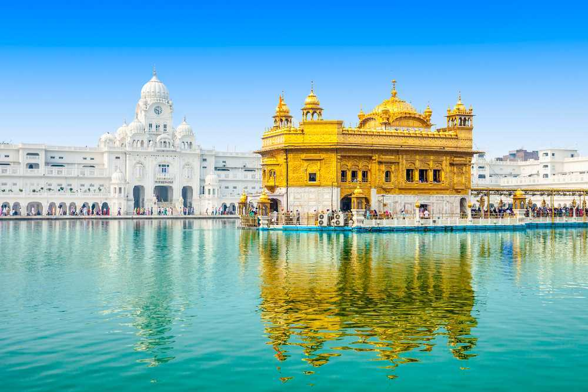
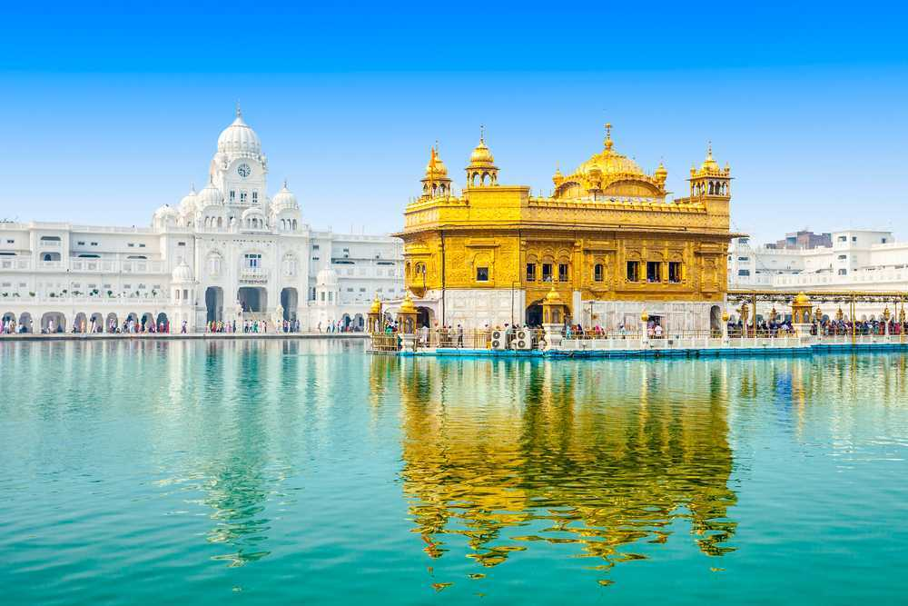

MONUMENTS OF INDIA
The Taj Mahal


It was built to honour the favourite wife of Shah.
It has Islamic calligraphy inscriptions all over.The Taj Mahal is one of the Seven Wonders of the World.
The architecture of Taj Mahal is a combination of Islamic, Persian and Indian style.
Fatehpur Sikri


Fatehpur Sikri built during the second half of the 16th century by the Emperor Akbar.
Fatehpur Sikri (the City of Victory) was the capital of the Mughal Empire for only some 10 years.
The complex of monuments and temples, all in a uniform architectural style, includes one of the largest mosques in India, the Jama Masjid.
Akbar shifted his residence and court from Agra to Sikri to honour the Sufi Saint Sheikh Salim Chishti, who resided here (in a cavern on the ridge).
The Red fort

The Red Fort is a historic fort in the city of Delhi (in Old Delhi) in India that served as the main residence of the Mughal Emperors.
Emperor Shah Jahan commissioned construction of the Red Fort on 12 May 1638, when he decided to shift his capital from Agra to Delhi.
Originally red and white, its design is credited to architect Ustad Ahmad Lahori, who also constructed the Taj Mahal.
The fort represents the peak in Mughal architecture under Shah Jahan, and combines Persianate palace architecture with Indian traditions.
Golden Temple
 

The Golden Temple (also known as Harmandir Sahib, meaning "abode of God" or Darbar Sahib, meaning "exalted court" is a gurdwara located in the city of Amritsar, Punjab, India.
It is the preeminent spiritual site of Sikhism.
The gurdwara is built around a man-made pool (sarovar) that was completed by the fourth Sikh Guru, Guru Ram Das, in 1577.
Guru Arjan, the fifth Guru of Sikhism, requested Sai Mir Mian Mohammed, a Muslim Pir of Lahore, to lay its foundation stone in 1589.
Mysore Palace


The Mysore Palace, officially known as Mysuru Palace, is a historical palace and the royal residence (house) at Mysore in the Indian State of Karnataka.
It is the official residence of the Wadiyar dynasty and the seat of the Kingdom of Mysore.
The palace is in the centre of Mysore, and faces the Chamundi Hills eastward.
Mysore is commonly described as the 'City of Palaces', and there are seven palaces including this one; however, 'Mysore Palace' refers specifically to this one within the Old fort.
The land on which the palace now stands was originally known as puragiri (literally, citadel), and is now known as the Old Fort.
Yaduraya built the first palace inside the Old Fort in the 14th century, which was demolished and constructed multiple times